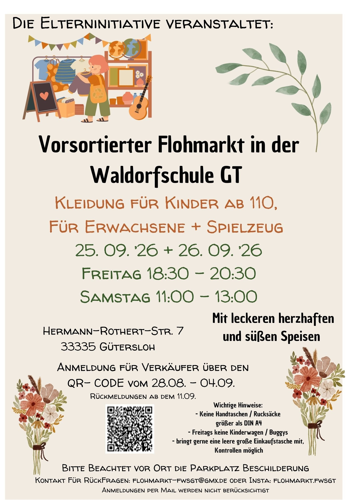

Video folgt in Kürze
Kleidung richtig verpacken
Wie ihr eure Kleidungsstücke und Sets für den Verkauf am besten zusammenstellt und verpackt.
Flohmarkt FWS GT
Organisiert von der Elterninitiative der Waldorfschule Gütersloh
Kleidung für Kinder ab Größe 110, für Erwachsene und Spielzeug.

Der Flohmarkt richtet sich an zwei Gruppen – hier findet jede:r den passenden Einstieg.
Anmeldezeitraum: 28.08.–04.09.2026. Rückmeldungen ab dem 11.09.2026. Die Anmeldung läuft ausschließlich über das Online-Formular – Anmeldungen per E-Mail können leider nicht berücksichtigt werden.
Zum AnmeldeformularKeine Anmeldung nötig – einfach vorbeikommen! Geöffnet freitags von 18:30–20:30 Uhr und samstags von 11:00–13:00 Uhr in der Waldorfschule Gütersloh. Für den kleinen Hunger zwischendurch gibt es herzhafte und süße Speisen vor Ort.
Impressionen ansehenSeit 2024 im Halbjahrestakt – dieses Mal schon zum fünften Mal:
Veranstaltet von der Elterninitiative der Waldorfschule Gütersloh
Kurze Instagram-Videos mit Tipps rund um den Verkauf – die Videos werden aktuell noch gedreht und folgen in Kürze.
Wie ihr eure Kleidungsstücke und Sets für den Verkauf am besten zusammenstellt und verpackt.
So beschriftet ihr eure Artikel korrekt mit Größe, Preis und Verkäufernummer.
Weitere Tipps rund um euren erfolgreichen Verkaufsstart beim Flohmarkt.
Fotos folgen in Kürze.
Schreibt uns eine E-Mail an flohmarkt-fwsgt@gmx.de oder folgt uns auf @flohmarkt.fwsgt auf Instagram.